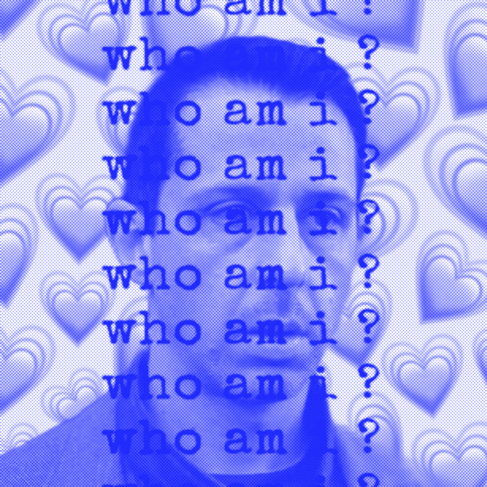
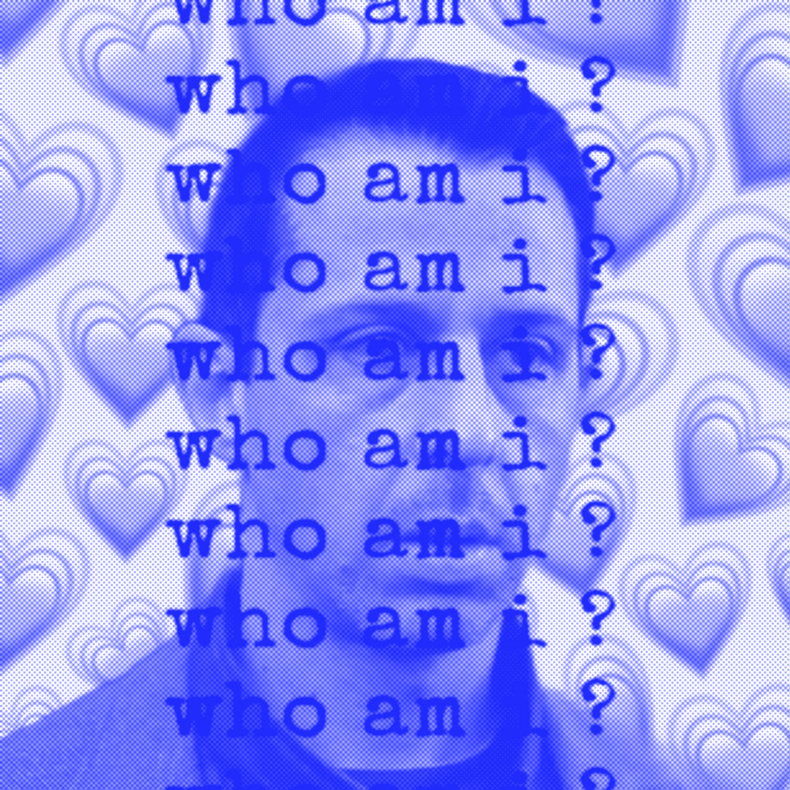
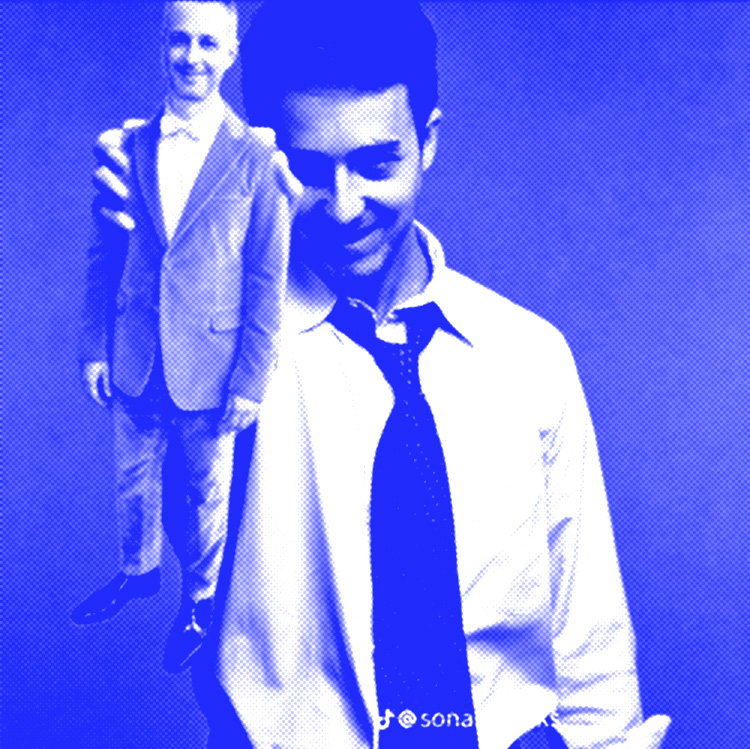
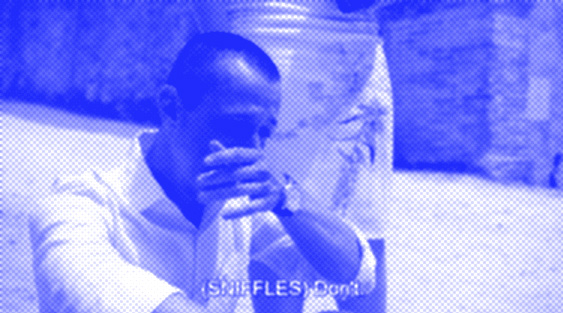
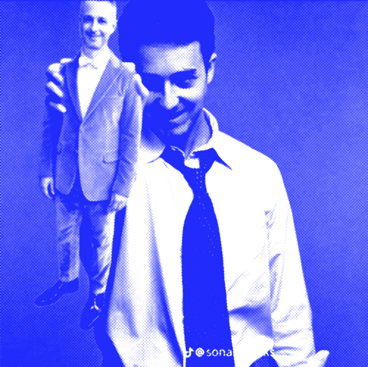
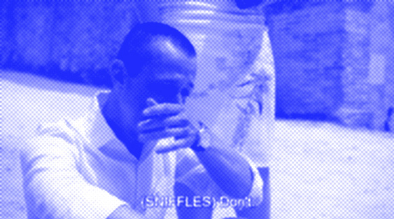
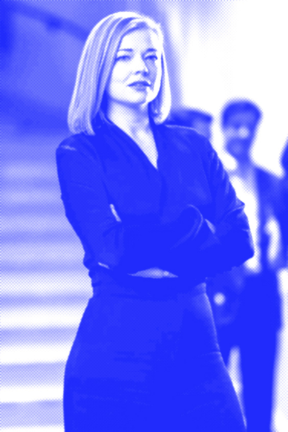
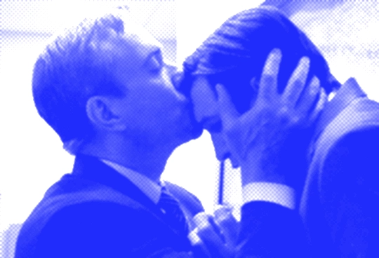
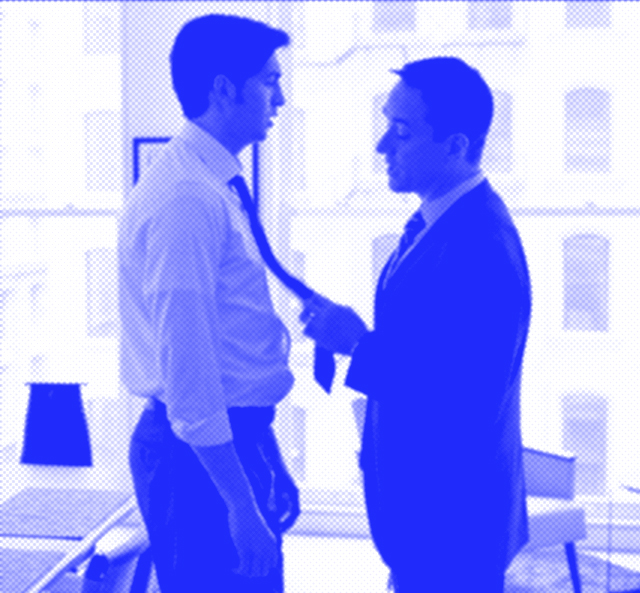

The End of Succession is Near
The show’s creator, Jesse Armstrong, explains why he has chosen to conclude the drama of the Roy family in its fourth season.

Photo illustration by Slate. Photos by HBO.
A few minutes before Jesse Armstrong was scheduled to call for a chat earlier this month, he sent a polite text saying that he was “adrift in traffic”: could he delay by fifteen? Traffic congestion served as an early plot point in Season 1 of “Succession”: who can forget the excruciating sequence in which Kendall Roy, having plotted the boardroom ouster of Logan Roy, the patriarch who won’t move on, is stuck in traffic—forced to leap out of his car in order to run in his leather-soled shoes toward the Waystar Royco headquarters, delivering his regicidal ultimatum while gasping for breath over the speakerphone? Seeing the ways in which even the super-rich cannot insulate themselves entirely against the vagaries of the outside world—traffic, weather—is one of the many pleasures offered by “Succession.” In three seasons since the show débuted, in June of 2018, as an unsettling comedy-drama hybrid, it has become an ensemble exploration of gnarled humanity at the highest levels of power, offering resonances with contemporary media dynasties and the Julio-Claudians alike.
Before we talk about why this is the last season of “Succession,” why have you decided to talk about the fact that this is going to be the last season of “Succession”?
There are a few different aspects. One, we could have said it as soon as I sort of decided, almost when we were writing it, which I think would be weird and perverse. We could have said it at the end of the season. I quite like that idea, creatively, because then the audience is just able to enjoy everything as it comes, without trying to figure things out, or perceiving things in a certain way once they know it’s the final season. But, also, the countervailing thought is that we don’t hide the ball very much on the show. I feel a responsibility to the viewership, and I personally wouldn’t like the feeling of, “Oh, that’s it, guys. That was the end.” I wouldn’t like that in a show. I think I would like to know it is coming to an end. And, also, there’s a bunch of prosaic things, like it might be weird for me and the cast as we do interviews. It’s pretty definitively the end, so then it just might be uncomfortable having to sort of dissemble like a politician for ages about it. Hopefully, the show is against bullshit, and I wouldn’t like to be bullshitting anyone when I was talking about it.
I got together with a few of my fellow-writers before we started the writing of Season 4, in about November, December, 2021, and I sort of said, “Look, I think this maybe should be it. But what do you think?” And we played out various scenarios: We could do a couple of short seasons, or two more seasons. Or we could go on for ages and turn the show into something rather different, and be a more rangy, freewheeling kind of fun show, where there would be good weeks and bad weeks. Or we could do something a bit more muscular and complete, and go out sort of strong. And that was definitely always my preference. I went into the writing room for Season 4 sort of saying, “I think this is what we’re doing, but let’s also keep it open.” I like operating the writing room by coming in with a sort of proposition, and then being genuinely open to alternative ways of going. And the decision to end solidified through the writing and even when we started filming: I said to the cast, “I’m not a hundred per cent sure, but I think this is it.” Because I didn’t want to bullshit them, either.
So even when you’re shooting there’s a possibility in your mind that you could keep it going to Season 5? I don’t know whether that’s a psychological trick on myself, to stop being sad about stopping doing something which I really, really enjoyed. Or it’s a creative trick to not make us get lachrymose or sentimental, or to kind of do it differently than we have done before. And a certain percentage of not definitively saying early on that this was the last season was also a feeling that sometimes on the show, previously, we’ve discovered plot avenues, character dynamics, which have demanded we follow them. And therefore not wanting to definitively close off the possibility of that happening this season—at least until it got weird to not say, O.K., I think this really is it.
Did you always have an idea of where “Succession” was going to end up?
Not when I was writing the pilot, nor probably in the Season 1 room, but I think, growing from about Season 2, I started to know where I thought it should end. I don’t keep that secret because that’s what the writing room is there for: to test the ideas out. The show is an artifice—you are making up the story. And yet there are certain ideas which feel organic and some which feel inorganic, and I guess the writing-room process for me is a great way of making a piece of artifice feel organic to us, and to myself.
At the end of Season 3, the Roy kids finally come together, but the only way that they can come together is in unity against their father. The tragedy of the Roy family is that it’s impossible to achieve a kind of equilibrium, in which everyone has got what they want. Is that right?
This starts getting into the uncomfortable bit for me, which is telling people what to think about the show, or that there are some unbreakable rules. But I think your observation is correct about human dynamics, especially family dynamics, especially powerful-family dynamics. But those things aren’t laws. Other people can reach accommodations and find ways to work together. Brian Cox said in an interview that Logan loves his children desperately, and that’s his weakness.
I think it’s true. You get into a bit of Prince Charles territory: What does love mean, when you never express it, and do things which are antithetical to what most people would consider to be love? But I think that Logan Roy would, rhetorically, reject any suggestion that he didn’t love his children to the utmost. And he has a whole intellectual defense system against the criticism that he’s done anything other than be loving. And I think it’s also important for Brian, playing Logan, to feel that thing underneath. There’s a version of this character who’s a caricature—who’s just the worst man in the world—and I hope we haven’t portrayed quite that.
At the end of Season 3, Logan says, “I fucking win,” but it’s at the expense of having these three children who are broken shells.
It’s just very complicated, isn’t it? I mean, he is not a terribly sophisticated person emotionally. But all of us, on a sort of personal and generational level, how do we feel about being succeeded by the next people who are coming along? Well, there’s a certain amount of pride and enjoyment. But there’s a certain amount of extreme, pressed anger at the passing of your prime, and your powers, and eventually your life. Logan is continually expressing his desire for this sort of imperial or monarchical—I’m trying to avoid the word “succession,” but—succession. And, at the same time, as a human being, he desperately wants to win. That includes winning over these people he sees before him, to whom he wants to give power and influence. He wants them to be able to inherit it. He’s a good vessel for that paradox.
Season 3 ended with a shot of Shiv’s face after she’s been betrayed by her mother, and her father, and, finally, by her husband. The mask of competence disappears, and the vulnerability and pain show through. Each season you have gone deeper and deeper into the pain of the Roys: on the surface, the show is a comedy, but there’s also this very, very anguished human experience that they’re all going through.
In the writers’ room, we have occasionally had a kind of recurring phrase: “Which is the most funny thing that could happen here, and by that I mean the most painful?” And, sometimes, “Which is the most painful thing that can happen here, by which I mean the most funny?” By no means do I find it funny when you see that shot of Shiv at the end of the season, but there is some odd way in which those things are interlinked. If you’re trying to mine that intensity of emotion, eventually you’re going to deplete it. Not that human beings don’t carry on living lives full of pain and anguish and complication—but, from a dramatic point of view, that seam becomes mined. And although I wish, in a way, to carry on doing this thing with this group of actors and writers forever, I wouldn’t want to be going down the mine, going deeper and deeper for more and more vanishingly thin seams of gold, or whatever ore it is we go mining for.
And then there’s Kendall, who is practically dead at the end of Season 3. And yet, in Season 4, he has to come back to life. There’s something awful, and something wonderful, isn’t there, about the fact that human life has to carry on even though it’s gone through maybe a crisis that looks like it will be completely transformative or completely denude a person of all power? Guess what—they still have to get up and carry on. Kendall is quite resilient in certain ways, and maybe some of that is sort of a mental defect. Maybe it is in all of us—being able to be resilient in the face of really tough things. But it’s a human thing, and he’s got it.
Let’s talk about Tom for a second. You’d laid the bread crumbs for what happened—when he betrayed the kids to Logan—but, when he flipped, people got very excited.
Some people seem to have this reaction where they get Tom but have these questions about him, like: Why are he and Shiv together? And how did he do this? Hopefully, it’s in that good area of being a mystery and not a muddle. Hopefully he’s a bit mysterious, in that way that you find human beings in life mysterious. Season 1 began with Logan’s eightieth birthday party. Season 4 begins with another birthday party for Logan. Is it a year that has passed, or longer?
I like everything having real-life models and examples, but the time frame is where I have to hold my hands up and say, Look, TV is just really hard. We’ve been doing the show for six or seven years, and people have aged, but the story moves at a pace that the story demands. I think that there’s probably been a couple of years elapsed in story time, but, to an audience, and indeed to ourselves as writers, it feels rather longer. The show has to live in a weird TV reality.
But no point trying to count the candles on the cake. I know you spend a lot of time in the writers’ room looking at current events. What kind of story lines in the real world have influenced this season? Have you been paying a lot of attention to Elon Musk?
Sometimes when you’re in the writers’ room and having one of those “Can we do this?” thoughts—for good and for ill, mostly ill, the last half decade has invited writers to not worry too much about pushing the boundaries of what’s acceptable political public corporate behavior. If you read the Financial Times and Wall Street Journal, you’d have a good sense of where we thought the show would go because it’s trying to reflect the world.
I remember once asking you if you were following what was going on with the British Royal Family, and you looked at me, like, no. But, with all that’s been going on with them lately, I wondered if you had been tempted to look closer at that real-life succession.
It’s been a human drama, and anyone who comes from the U.K., and even the U.S., has obviously been sort of more drawn into it, with the heir and the spare. It is interesting to note that these are not dynamics that the show was unfamiliar with, because every single corporation and monarchy and empire has these crises around succession, because it’s so potent. I guess I’m interested in how that succession intersects with power. And that’s why the British monarchy fundamentally feels comic to me, rather than anything else. Not that it doesn’t have a lot of cultural power and isn’t a huge part of the national psyche. But because, if it were ever to draw its sword from the scabbard, it would probably be made of vanilla sponge cake.
So, Jesse, how are you feeling about giving up this thing, and saying goodbye to it?
I feel deeply conflicted. I quite enjoy this period when we’re editing—where the whole season is there—but we haven’t put it out yet. I like the interregnum.
And I also quite liked the period when my close collaborators and I knew that this was probably it, or this was it, but hadn’t had to face up to it in the world. It’s been a difficult decision, because the collaborations—with the cast, with my fellow-writers, with Nick Britell and Mark Mylod and the other directors—they’ve just been so good. And I feel like I’ve done the best work I can do, working with them. And HBO has been generous and would probably have done more seasons, and they have been nice about saying, It’s your decision. That’s nice, but it’s also a responsibility in the end—it feels quite perverse to stop doing it.
So I do feel conflicted about that. And I feel sad, and I have the circus-has-left-town feeling that everyone gets who works on a production that’s good, and this one particularly so. I imagine I’ll be a little bit lonely, and wandering the streets of London in a funk, and wondering, What the fuck did I do? I’ll probably be calling you up in about six months asking if people are ready for a reboot.
Well, John Cleese just showed that it doesn’t matter how long you wait—it’s never too late. [Cleese recently announced a reboot of “Fawlty Towers,” which originally ran in the nineteen-seventies for two seasons and twelve episodes.] I do think that this succession story that we were telling is complete. This is the muscular season to exhaust all our reserves of interest, and I think there’s some pain in all these characters that’s really strong. But the feeling that there could be something else in an allied world, or allied characters, or some of the same characters—that’s also strong in me. I have caveated the end of the show, when I’ve talked to some of my collaborators.
Kendall Roy is #Girlboss and #Babygirl
Photo from Redbubble
When Kendall Roy (Jeremy Strong) triumphantly yells this rallying cry to press in this week's episode of "Succession," we can't help but cringe — almost as hard as we did during Kendall's delivery of a particular celebratory birthday rap, seemingly a lifetime ago.
This week, Kendall continues his quest to oust his father Logan (Brian Cox) from the family empire, Waystar Roy Co., by exposing his father's complicity in widespread sexual abuse, exploitation and even death among workers on their cruise line. Of course, Kenny only committed this betrayal in protest of being the fall-guy for the cruise scandal, wheras previously, he would have thrown any of the survivors of abuse under the bus, which he more or less did with his Season 2 Senate testimony writing off the accusations against his family as a politically motivated attack.
Since turning on the objectively evil family business, Kendall has been high on his own supply — or rather, his own utter lack of self-awareness — even more so than usual. He feels that he's "good" now, and he's adopted the social justice-y language to prove it, cementing himself as the ultimate #GirlBoss. His levels of delusion about his own goodness and the ways it's perceived reach new heights in Sunday's episode, as Kendall staunchly identifies with the very progressives who mock and scorn him.
Co-opting social justice language can only take you so far.Just last week, we got evidence of just how committed Kendall is to his new-age, "woke" branding.
F*ck the Patriarchy!
In trying to get his siblings to help him overthrow their father, he speaks of the powerful old white people who run the world as if he and his siblings aren't just like them. "The great whites, from politics to culture, they're rolling off stage — it's our time," Kendall says.
Photo from Tiktok
Photo from Tiktok
Photo courtesy of Chloe Gillespie/Junkee.
Photo from Redbubble
"You mean us? This multi-ethnic, transgender alliance of 20-something DREAMers we got right here?" Roman (Kieran Culkin) responds.
Kendall ignores Roman's quip, either because he knows it's true or because he simply doesn't get it. What follows sounds like a page out of a Pete Buttigieg Iowa stump speech from 2020.
"Big picture? We're at the end of a long American century," Kendall says. "Our company is a declining empire inside a declining Roman empire. . . . U.S. supremacy is waning. Within that context, we can become omni-national and reposition. Information is going to be more precious than water in the next hundred – Amazon is 20 years old, Gates is an old geezer, detoxify our brand and we can go supersonic."
Um, what?
Whether or not there's merit to Kendall's vision for the rebranding Waystar could undergo if they remove Logan and take charge, it's clear he doesn't actually embody the values he's sputtering. When Shiv (Sarah Snook) rejects his offer to team up, he snarls back, "It's only your teats that give you any value!" (But sure, F the patriarchy!)
Whatever language he uses, he is who he is, and he is where he is because of self-interest more so than sympathy for the female victims of his family. Of course his progressive critics can see right through this, no matter how much he pitifully identifies as one of them.
We see this again in Sunday's episode when his entourage plays a bizarre, narcissistic game of "Good Tweet-Bad Tweet" in the back of a limo, during which Naomi Pierce (Annabelle Dexter-Jones), Cousin Greg (Nicholas Braun), and Comfry (Dasha Nekrasova) alternate between reading positive and critical tweets about Kendall.
A tweet that Naomi reads — "Allies don't always come in the form we like, but what Kendall Roy did was important and brave" — is the perfect ego-stroker that exemplifies exactly how Kendall sees himself, and wants to be seen. Others? Not so much. Another "good" tweet comes from a user who admits to "want[ing] to f**k Kendall Roy," but the others, read by Greg and then Comfry, hit Kendall where it hurts — or where it would hurt, if he had enough self-awareness.
"Kendall Roy is not a hero, fam," Greg reads, "He is bootleg Ross with a daddy complex."
"He clearly has mental health issues and crazy guilt, coupled with addiction. That's all this is, and it's sad," Comfry reads.
Kendall seems to shrug these meaner tweets off, leading the limo riders in chanting "That one sucked! That one sucked!" We later learn that one of the main reasons he seems so unphased by nasty (and deserved) criticism and mockery is that Kendall is very much a student of the "all press is good press" school of thought. If people are talking about him, no matter what they're saying, it's because they love him!
Take his latest obsession, a John Oliver-esque comedian masterfully played by Ziwe whose show "The Disruption with Sophie Iwobi" consistently targets him, dubbing him an "Oedipussy." During one segement of her show, Sophie diagnoses Kendall with Caucasian Rich Brain.
"What happens is genetically inherited wealth and whiteness cause neural pathway in the brain to constrict and make the patient believe he's woke when he's just a total f**king jackass," she explains.
Kendall is ecstatic, seeing this as a delightful roast. "This is being in the conversation. This is f**king great," he tells his team. Later, he even insists on going on the show as a guest.
In a world of Jeff Bezoses, Elon Musks, and Mark Zuckerbergs, who can hire top-tier comms and marketing teams to sell them as benefactors rather than soulless wealth-hoarders, co-opting social justice language as Kendall does just doesn't hit like it used to. People who are actually committed to progressive values and actions can see through shallow progressive language like Kendall's, and see who he really is — something Kendall is still trying to figure out himself.
Kendall's true colors
The irony is that it's the very women Kendall claims to be helping who are calling him out. At one point during the awkward journalism gala, he refuses to meet Shiv halfway when she asks to work to change Waystar from the inside, and she asks him point-blank, "Do you not actually give a f**k and it's all ego?"
(For what it's worth, Shiv isn't exactly the "good guy" she thinks she is, either, but at the very least, she isn't shouting "F the patriarchy" to the press.)
Later, the siblings' inability to agree on a way forward escalates when Kendall sabotages Shiv's official public Waystar debut. For her first speech as president at the company, Shiv promises Waystar is committed to listening to criticism and accountability – when she's promptly interrupted by "someone" amplifying Nirvana's song "Rape Me," driving Shiv from the stage.
Of course, Kendall's visit to Waystar not-so-coincidentally coincides with this stunning display of callousness and cruelty, and one that makes light of rather than helps any of the victims of Waystar, and exemplifies more than anything that Kendall — if responsible — cares more about petty revenge on the family that tried to screw him, than standing with women. Even if his stunt is meant to highlight the company's hypocrisy, it's done in such a public and empty way that it accomplishes nothing except for causing embarrassment.
Shiv, not willing to take the humiliation Kendall subjected her to lying down, publishes a statement that references Kendall's "many attempts at rehabilitation from his multiple addictions," his long history of misogyny, and his "grandiose and disordered thinking," moments before he goes on stage to join "The Disruption with Sophie Iwobi" as a guest.
The piercing statement finally takes Kendall down a peg, forcing him to reckon with the truth that — gasp! — not everyone likes him, or is laughing with him, and that this is still how many people perceive him, no matter what he tweets out. Even if he'd like to write off Shiv's statement as a mere power play, it is out there for the world to see, and from his own sister no less, which carries weight. Kendall has something of a breakdown and ditches the show, giving Sophie free rein to demolish him. And while she calls him a few choice names, she acknowledges nothing could be as brutal as the letter Shiv had blasted out.
Kendall's pathetic blindness his own hypocrisy reminds us of one of his tweets that Sophie had highlighted previously: "We must overthrow the culture of corruption that silences women."
Sophie points out this is like a dog saying, "We have to punish whoever ate coffee grinds and s**t on the sofa #SofaJustice." (The "social justice"/ #sofajustice wordplay is just *chef's kiss*.)
She's not wrong — the tragic clownery of Kendall is his inability to fathom that he is a huge part of the very systems and crises that he publicly critiques with his fine-tuned social justice language and branding. It's unclear to what extent he knows this or is completely bereft of self-awareness.
L to the OG L to the OG L to the OG L to the OG L to the motherf*** in' OG
Kendall Roy's rap
Kendall Roy, mentally ill teenage icon
 

hello
 



About a year ago, HBO’s “Succession” was wrapping up its third season. I’ve recently decided to rewatch it while basking in my memories of watching it as it aired a year ago — my roommates and I on the edge of our seats, following intently as if it was an installment of “The Real Housewives” despite its serious tone. I even passed up studying for my French final to watch the season’s finale, a memory that sits fondly with me despite its consequences. It was fun to be online during the airing of the show because of the funny commentary and viewers’ artwork in response to each new episode. Fandom influences many of my viewing experiences, and my relationship with “Succession” has certainly changed because of it.
Created by Jesse Armstrong, “Succession” is a comedy-drama centered around a family of billionaires and their constant struggle to usurp the CEO of their company, Waystar Royco. The main characters feature Logan Roy (Brian Cox, “The Independent”), the company’s founder, and his four adult children. Each of the children have their fair share of egregiously first-world issues — being born into a family of incredible wealth and influence and promised the role of a lifetime — and many of the show’s plot points showcase their complex family dynamics. The show is not shy to highlight Logan’s abusive behaviors toward his children, implying that many of their issues come from a rough childhood, as well as showing how their upbringing has affected their relationships with others even into adulthood.
“Succession” is a particularly fascinating case, as it highlights moral grayness in its leads; this parallels other well-regarded shows such as “Breaking Bad,” “Mad Men” and “The Sopranos.” On paper, it is very easy to hate the characters of “Succession”; Armstrong was heavily inspired by the Murdoch family in creating the Roys — both families have the same amount of scandal, wealth, power and disdain for those beneath them. They are the picture of capitalism gone too far, of gross wealth that’s gotten out of hand. Yet these hints of past abuse and sibling love make me unable to look away. The show’s focus on broken family dynamics tugs at my heartstrings ever so slightly, and keeps me crawling back in hope that the Roys gain some humanity.
Atmospheres online surrounding the show are broad: Over the past year, there seems to have been an increase in younger people enjoying “Succession.” IMDB’s demographics ratings suggest that the bulk of viewers are 30-44 years old, followed by viewers 18-29 years old. Though younger people are not as popular within these demographics, from my experience online, I’ve noticed many people in their late teens and early 20s becoming enthralled, particularly with the character Kendall Roy (Jeremy Strong, “Armageddon Time”).
Kendall is arguably the protagonist of “Succession.” He’s the second-eldest son, who at the start of the show seemed most likely to win the position of CEO. However, his deeply depressive personality, struggles with drug addiction and heavy reliance on his father’s opinions quickly unravel his chances. Posts sympathizing with Kendall’s sadness from a female perspective have become increasingly common on Twitter and Tumblr. Searching Kendall on Pinterest yields search suggestions of “Kendall Roy sad” and “Kendall Roy aesthetic” and merch like this “Team Kendall” Twilight-style shirt went viral online recently. Fans of him often call themselves “Kendall Girls” as if he was the star of a boy band. All of this constructs a narrative of Kendall online that often romanticizes his story, erasing his misdeeds in favor of making him a relatable figure of mental illness.
It shocks me coming back to “Succession” and seeing what he’s actually like. Kendall is an abysmal soul, and the show does not hide that. One of the first things we learn about him is his messy divorce, as his ex-wife references him doing cocaine off of his children’s iPads. He is pathetic, willing to throw around billions of dollars to piss off a relative. His sentences are heavily bulked with curse words and penis jokes as though he’s still in high school. Within the first three episodes of the show, he makes a business deal that pulls his family’s company out of debt while doing cocaine in the bathroom with his college best friend. He also engages in anti-union practices, following orders from his father to fire an entire company simply because they were rumored to unionize.
He positions himself as a progressive later on in the series — a strong figure, a force to be reckoned with. Yet it is so clear that these are illusions. The minute he has time to himself, he wears a deeply hollow, somber expression. He is a man made up of corporate buzzwords, tweeting about “listening to women” and never listening to a single woman around him. He is a sad child at heart, dependent on the approval of his father yet desperate to pull away from him. Yet these “sad child” actions are on a giant scale: He is worsening the lives of average workers, majorly altering stocks and tossing money around like it’s nothing in brief fits of outrage.
Kendall is a fascinating character for this reason. He can easily be read as a depressed teenager, yet his position in society does not fit that mold. It’s a harsh contrast — the rich, successful businessman in a state of permanent regression and terminal sadness. “Succession” is masterful in its characterization, in its portrayal of humanity. One moment, I view Kendall as a plague of late-stage capitalism; I feel it is impossible to ever remotely understand him. But when he kneels in the dirt, saying “I’m all apart,” “It’s fucking lonely” through tears, he suddenly becomes painfully real. I feel this tweet sums up his tragic character quite well.
There is a wide range of reasons why people (particularly women) have latched onto Kendall. I think it’s certainly possible that one can identify with him; at his core, that desperation for family approval is so heartbreaking and real. For one, this Reddit post positing, “Any other women heavily relate to Kendall?” has 579 upvotes, clearly indicating his relatability. He is a grown man who wishes that his feelings would go away, yet they run his life. He clearly feels guilty for participating in the system, and his constant struggle over his actions may ring true for some viewers. I think it’s important to acknowledge his many flaws, though, rather than reducing him to his pitiful boyish nature.
In Shiv Roy We Trust
Succession season three has not been a pleasant one for Shiv Roy. She’s been slowly sidelined and often torn down through eight episodes of familial maltreatment so far. But Shiv (played to perfection by Sarah Snook) hasn’t always been the family’s exquisitely suited punching bag. Originally a Waystar outsider before rising to corporate powerplayer, she was at one point ready to take over from her dad Logan as CEO. So what happened?
To chart her course, we must go back to season one. “Shiv ‘Fucking’ Roy” – as she confidently referred to herself – appeared the smartest of her siblings. A political strategist and media pundit, Shiv was cocky and cutthroat but still had some semblance of a moral compass. She was never as desperate for her father’s approval as the others.
In the show’s second season, Shiv changed. Persuaded into the family business by Logan, who dangled the top job, she was seduced by the promise of power. This was a chance to lord it over the boy’s club and her bros. In the end though, Logan took back his offer, pitting Shiv against Kendall and Roman once more.
Now, in season three, she’s fully integrated into the corporate structure. Crowned President of Domestic Operations in episode two, Shiv has been happily doing daddy’s dirty work to help cover up horrific accusations of of systemic sexual abuse. She is presented as the sensible, untarnished new face of Waystar – and Logan’s convenient favourite (“his only daughter”).
Encouraged by this, Shiv came into work head held high, with her girlboss power suits and straightened bob – and was promptly torn to shreds. In her big public debut, Kendall blasted Nirvana’s ‘Rape Me’ – in reference to the ongoing scandal – over loudspeaker as she tried to deliver her first official speech. It was a global, livestreamed humiliation. Even Connor, the First Pancake of the Family, went over her head when he didn’t get what he wanted, batting her authority off with an “I just don’t wanna deal with you”. Later, Logan mocked her, telling his assistant to “give her a medal” when she made a company-saving deal. Elsewhere, Roman refused to explain the details of an important negotiation to her.
Of course, Shiv’s abasement cannot be separated from her femaleness. The only daughter, and the only Roy kid who was not raised to work at Waystar, she is reprimanded when she fails – as well as when she succeeds. Shiv’s belittling often happens in front of her, to really remind her of her place. We’re not expected to sympathise with Shiv – she’s as unlikeable as the rest of the Roys – but the attacks she faces are designed to strip her of the very qualities that made her stand out from her brothers.
While the men of Succession are allowed to fail upwards – Roman becomes COO despite a botched space launch, Kendall co-COO after his attempted takeover and Cousin Greg, inexplicably, keeps on rising up the ranks – Shiv’s denigration feels more permanent. Everyone – even Connor – knows that her new position is a joke. Yet it’s taken Shiv almost the entire third season to realise she was set up to lose by her dad who, in true Logan fashion, is letting everyone around him chip away at her on his behalf. She does what he asks of her, and gets shut down, told she’s “another toothache”.
As we approach this week’s finale, the haughty, cocksure Shiv has been replaced with a needy, posturing try-hard. All this season, Shiv has been pretending that she’s important to Waystar but the truth is the opposite. Shiv can’t regain any power there because she never had any to begin with. She was never going to be CEO, Logan knew this from the start. She’s never going to be able to muscle her way to the top like Roman has. And her attempts to draw a moral line – by not supporting an openly fascist Presidential candidate or spying on Kendall’s children – push her even further away from Royco’s inner power circle. Perhaps the only way back for Shiv ‘Fucking’ Roy is to exit the rat race altogether.
Shiv will do anything to please her father, but she’s so drunk on power that she’s convinced herself that she’s better than him. In the beginning of Season 3, Shiv tries to convince her brothers to sign a letter that details Kendall’s addiction, arguing that he isn’t in his right mind. Not even Connor nor Roman would stoop so low. In the fourth episode, Shiv tells Mark Ravenhead, an anchor at ATN, to start airing rumors that the president of the United States is “losing his grip.” When Mark threatens to go public, Shiv says matter-of-factly, “We don’t get embarrassed.”These actions are destroying her relationships with Tom and her family, particularly Kendall. In the first season, the siblings would stick up for each other against their abusive father. But now, Shiv is working against her siblings on her father’s behalf because she thinks that will get her what she wants. In Episode 5, Kendall approaches the Waystar crew during the shareholders meeting. Shiv screams at him that he’s not welcome and to “get the fuck out.”
Tom and Greg <3 Forever
Exploring queer desire in HBO’s Succession
Ashow about a powerful American media empire run by patriarch Logan Roy (Brian Cox) and his adult children, Succession is couched in luxe bigness and indulgent, melodramatic dialogue. Such traits amplify an undercurrent of desire in a series already charged with a homoeroticism that flies in multiple, erratic directions, like a bouncy ball thrown from one of the skyscrapers featured in the opening credits.
“Would you kiss me? If I asked you to? If I told you to?” are some of the first lines Tom Wambsgans (Matthew Macfadyen) delivers to his cousin-in-law Greg Hirsch (Nicholas Braun), a relative of the Roy children, newly relocated to New York to milk whatever distant nepotism he can. While Greg appears startled by the explicitness of this exchange, the pair develop an alliance/pseudo-friendship over the course of the season. Tom and Greg are regularly shown watching one another. Tom’s touches linger; Greg’s eyes twinkle.
These sensual expressions are echoed through dialogue. Tom and Greg’s conversations frequently reference their mutual desire, so much so that it seems the show’s writers are attempting to underscore it. “Are you trying to seduce me?” Greg jokingly asks at an expensive dinner. A blushing Tom confirms through laughter that he is. When their office is put under lockdown and the two are sequestered in a safe room, Tom disparagingly refers to this as “hiding in the closet.”
This scene highlights Tom and Greg’s potentially romantic interest beyond the physicality of their interactions. When Greg asks Tom if he can spread his wings in a separate department, he tentatively requests a “business open relationship,” recalling Tom’s wedding night conversations about polyamory with his wife Shiv Roy (Sarah Snook). The exchange with Greg, however, has more emotional urgency. Tom begins to cry before throwing water bottles at Greg. “We’re friends!” Greg pleads; “Fuck you!” Tom screams in response.
Loaded language and a simmering yearning are not exclusive to Tom and Greg. In season one, Kendall Roy (Jeremy Strong) meets his old friend Stewy Hosseini (Arian Moayed) in a café to pitch him an opportunity to “come in” to his family business and bail them out of debt. The two banter before Stewy makes an ambiguous gesture with his fist, suggesting they head to the bathroom just like “back in the day.” Stewy’s reference to a past arrangement is a concept that a number of fanfiction writers have interpreted sexually.
The habitual double entendre of Stewy’s dialogue with Kendall re-emerges later in the season. The two frenemies find themselves at an underground sex club, where Stewy asks Kendall if they can “talk somewhere private.” Whether this anticipated privacy refers to sex or drugs doesn’t matter – when it comes to these two, licked donut holes, lines of cocaine, and lavender sprigs sniffed during business meetings evoke the body so strongly that they become carnally coded.
Like Tom and Greg, Kendall and Stewy’s pairing is often framed in terms of a thwarted emotional intimacy. “We had the whole world in our hands and you walked,” Stewy says to Kendall, with the accusatory, affective tenor of a broken heart. Squeezed together in a series of nearly voyeuristic close ups, the pair intimately search one another’s faces as if probing for words unsaid.
On-screen longing between Succession’s female character is more complex, which is hardly surprising given the show’s themes of misogyny and patriarchy. In the second season, Rhea Jarrell (Holly Hunter) briefly joins the cast as Logan’s advisor. While Rhea is first perceived by the Roy children as their father’s seductress, her most potent dynamic is with Shiv. Shiv accepts Rhea’s offer of professional help, which backfires. She calls Kendall and spits into the phone that Rhea “fucked” her; while Shiv means that Rhea fucked her over, this seemingly innocuous delineation is largely expressive.
Shiv becomes obsessed with Rhea and describes the other woman using vitriolic, sexually charged language. Their interest in one another is coated by much denser patriarchal dynamics. Does Shiv want to be like Rhea or does she desire her? Probably both, but for the women who participate in the worldview Succession represents, competition and indifference are conceived as the only relational outcomes.
Key to the show’s approach to sexuality is its hollowing out of the heteronormative ideals that capitalism implicitly promotes.
Like Mad Men’s previous exploration of masculine machinations of power, Succession appears to be playing an ambitious narrative long game. Still, the actualisation of any of these aforementioned queer dynamics is unlikely, but this may be part of the point – after all, Succession is ultimately about repression among the super rich and powerful. Because of the system in which they’ve staked out their lives, these “couples” are destined to endlessly betray one another in favour of draconian individualism. Capital smothers authentic connection, which makes Succession’s desiring duos act not only cruelly but also dangerously.
One of Succession’s most devastating scenes occurs during its first season finale. Kendall – who seems a near cipher for the vampiric forces of big money – observes the dance floor at Shiv and Tom’s wedding. Whitney Houston’s “I Wanna Dance with Somebody” (itself a gay anthem) starts to play. The shot widens to capture most of the adult Roy children dancing in slow motion. They’re together but alone, moving in different rhythms or looking in different directions. “I wanna feel the heat with somebody,” Whitney sings. What would it mean for some of these characters to actually connect? In a show where everybody is vulnerable in isolation and actual trust between anyone is unimaginable, it’s in Succession’s unstated queer relationships that this possibility for connection opens up, only to be quickly swept under the rug.
Of course, for Succession to explicitly represent these relationships as gay or queer wouldn’t excuse the terrible actions these characters take. The horrific abuses of power depicted in the show are frankly nauseating. Similarly, while I desperately wish that Kendall and Stewy would share a subversive on-screen smooch, my own queer spectatorship doesn’t absolve me of the moments in which enjoying Succession makes me complicit in its icky politics. The intersection of these spectatorial identities – equal parts desire and antipathy – might be best described by one of Tom’s most telling lines to Greg: “I don’t always like who I am.”
A couple of months ago, Brian Cox joined Cameo. As soon as I saw the news alert that he was on there, I downloaded the app and submitted a request in hopes of receiving a video from him.
And listen: Brian Cox is a dazzling actor with more than 230 acting credits across film and television. Throughout his career, he’s been in a great number of things, from Unquestionable Masterpieces (Zodiac) to Cult Classics (Super Troopers) to Blockbuster Smashes (Rise of the Planet of the Apes) to Pop Culture Institutions (The Simpsons) to Movies Where Brad Pitt Has Long Hair (Troy). But I didn’t mention any of those in my request. Because none of those were relevant to my particular interests at that particular moment.
My wife is an especially big fan of Succession. She, like so many of us, finds it to be a sharp, dramatic, brilliant, often darkly hilarious show. And Logan Roy, Brian Cox’s character and the father of the family at the center of the series, is one of her favorite people in it. Which is why I made the request on Cameo. I thought it would be a neat little gift (her birthday was only a week or so away at the time). Specifically, I thought it would be neat for Brian Cox, if at all possible, to end whatever message he felt like sending her with some version of the phrase “fuck off.” (He did, and she was very happy about it.)
“Fuck off” is the defining expression (and also the defining ethos, probably) of Succession. It informs everything, both as a statement and as a feeling. A person you’re negotiating with presents you with an option that you feel is less than ideal? Fuck off. A meeting is over and you want everyone to leave? Fuck off. One of your children expresses a very candid set of emotions in your direction? Fuck off. It always works. And it always fits. So it’s always said.
However, it was a different two-word phrase muttered during the Season 3 finale of Succession that somehow felt even more magical, and more perfect, and more profound, even if only in a fleeting sense (possibly because it was in a fleeting sense). In the 52nd minute of the episode, after Kendall and Shiv and Roman have decided to leave their mother’s wedding and use a loophole in their parents’ divorce agreement to finally force Logan out of power at Waystar, Shiv calls Tom, her husband and also the person in charge of the news branch of the family’s multibillion-dollar company. She tells him about their plan, then tells him she wants him involved (to use the news channels to spread the news as fast as possible), and then hangs up. Tom stands in silent consideration for a few moments, weighing and calculating everything he’s just heard.
As he stands there, Greg, a 10-foot-tall gingerbread man and also Tom’s accidental best friend, approaches. Before Tom can say anything, Greg begins telling Tom about how he and a woman a few steps removed from royalty have hit it off. Tom lets Greg talk, but he’s only half-listening because he’s still rolling around in his head the information that Shiv has just given him. When Greg is finished, Tom has a realization, and pivots away from the talk of Greg potentially becoming the king of Luxembourg via a countess. “Greg, listen,” he says, and then he pulls out two chairs from a nearby table while looking around to make sure nobody is within earshot.
Greg sits. He can tell that something serious is going on, so he very earnestly asks, “What’s up?” Tom, speaking in extremely and purposely vague terms, lays out a proposition for Greg: He tells Greg that a series of events are about to take place, and he implies that they will affect Tom in one way or another. Then he leans in a little bit, looks Greg in the eyes, and with total sincerity, asks, “So, umm, do you wanna come with me?” Then he waits a beat.
Greg rightfully asks for more information, but Tom denies him that. Tom won’t say what’s happening. Tom can’t say. Greg hesitates, saying he has other options that might be better, if only because he at least knows what those options actually are. And so Tom leans in further and, again with total sincerity, asks, “Who has ever looked after you in this fucking family?” It’s a statement that resonates with Greg, who has watched from afar as Father Roy and Siblings Roy have attempted again and again to rip the arms and legs off of one another during their power battle for the steering wheel of the family company.
Greg and Tom continue the back-and-forth—Tom never divulging any information and Greg begging for whatever clarity he can get. At the very end of it, after Tom’s finished laying out his argument (which is essentially “just trust me with your entire life”), when he can feel Greg beginning to nibble on the line, he sets the hook: “Listen,” he says, glancing down at his watch, but not in a way that feels like he’s being dismissive of Greg, but instead in a way that feels like he desperately wants for Greg to say yes. “I have things to do. Umm, do you want … a deal … with … the devil?”
Greg hesitates again. He thinks on it for a second. He puts his hand on his head, takes a breath, then looks at Tom: “What am I gonna do with a soul anyways?” He’s in.
Relief spreads across Tom’s face. “Souls are boring,” says Greg, smiling free and beautiful, an expression immediately reciprocated by Tom. Greg puts both of his massive hands on Tom’s shoulders, looks at him, then playfully says, “Boo souls.” Tom bursts into a laugh, and Greg laughs, and it’s beautiful and heartwarming. And that’s when Greg says the two words: Sitting back in his chair, he gives Tom his most heartfelt look and says, simply but with great meaning, “Of course.”
The “of course” there is a lightning bolt. Everyone on Succession is always scheming and plotting and backstabbing and conniving and leery of each other no matter their relationship. It’s as nasty and ruthless and emotionally venomous of a psychological environment as can be had (among billionaires, anyway). And so in this very pivotal moment, Greg responding to Tom’s wholly informationless pitch with an OBVIOUSLY I’M GONNA BE BY YOUR SIDE, YOU DIDN’T EVEN HAVE TO ASK kind of tone and smile is just massively gorgeous. It’s a lighthouse in a storm. It’s that feeling of THANK GOD after you finally pluck an impossible and uncompromising days-old splinter from your foot.
Let’s watch it again, this time just from the “Of course” moment:It’s perfect; the warmth of Greg’s voice, the way Tom laughs a small laugh to keep from crying, the way they shake hands and then stare at each other for a second before wordlessly deciding that it’s not enough and they must stand up and hug. Perfect.
It’s the payoff of a friendship that began back in the first episode of the first season when Tom razzed Greg at a private and impromptu softball game and has now stretched across a heavy roster of bonding moments that includes the two being trapped in a room together during an active shooter threat, the two being humiliated while Logan tried to smoke out a potential rat on the team, and the two facing possible prison time for destroying evidence of various and awful illegalities committed on a cruise ship. It’s the payoff of an in-plain-sight promise (that we all missed at the time) that, if the time ever came, Tom would choose protecting Greg over protecting his own wife.